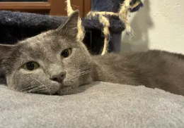

Computer Science and AI
I enjoy learning how software works and how artificial intelligence can solve problems, create useful tools, and change the future.
Personal Website
I like exploring computer science, AI, math, and history, and I spend my free time reading, playing video games, shooting hoops, and hanging out with my two cats.
About Me
This site is a quick snapshot of the things I enjoy most: learning technical subjects, thinking through interesting problems, reading good books, playing games, basketball, and taking care of Mimi and Nini.
Interests
I enjoy learning how software works and how artificial intelligence can solve problems, create useful tools, and change the future.
Math is interesting because it turns patterns, logic, and problem solving into a language that explains the world.
I like history because it is full of stories, big decisions, surprising connections, and lessons about people and civilizations.
Hobbies
Books are a great way to explore new worlds, ideas, characters, and questions.
I like games because they combine strategy, creativity, challenge, and adventure.
Basketball is fast, energetic, and fun, especially when a good shot finally drops.
Pets

Gray British Shorthair
Mimi is a 7-year-old gray British shorthair with a soft, round look and plenty of personality.
Ragdoll
Nini is a 7-year-old ragdoll, known for being fluffy, sweet, and very easy to love.